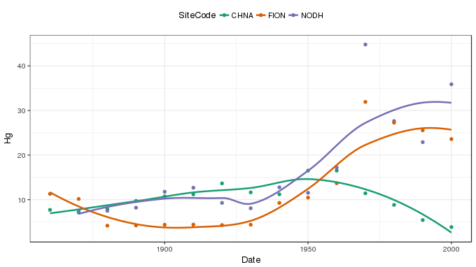
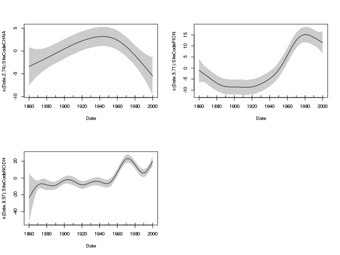
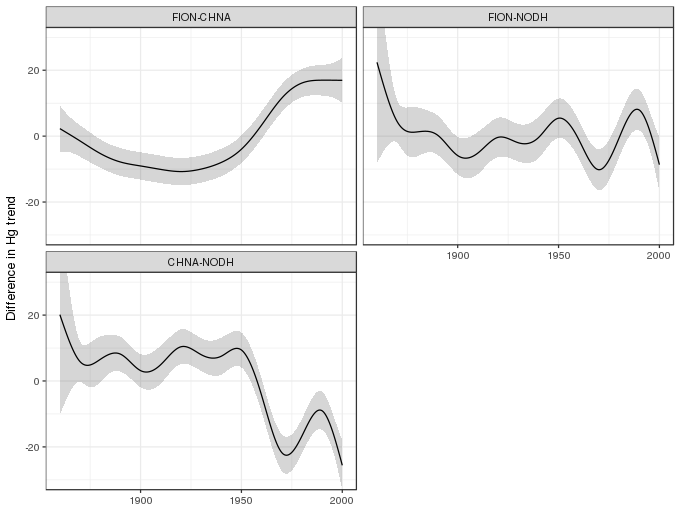

Comparing smooths in factor-smooth interactions I
by-variable smooths
Posted in
Tagged
GAM smooths factor-smooth interactions mgcv difference smooths
One of the really appealing features of the mgcv package for fitting GAMs is the functionality it exposes for fitting quite complex models, models that lie well beyond what many of us may have learned about what GAMs can do. One of those features that I use a lot is the ability to model the smooth effects of some covariate \(x\) in the different levels of a factor. Having estimated a separate smoother for each level of the factor, the obvious question is, which smooths are different? In this post I’ll take a look at one way to do this using by-variable smooths.
With mgcv, smooths are included in model formulae using the s() function. If you want to have the smooth equivalent of a continuous-factor interaction, one way to achieve this is via the by argument to s(). If you pass a factor to by, mgcv sets up the model matrix in such a way that you get a separate smoother for each level of the by factor. Each of these smoothers gets its own smoothness parameter — so you can fit a wiggly function in level foo and a smooth function in level bar, with each level’s function being learned from the data associated with that level.
I used this technique in a paper I wrote with my colleagues at UCL, Neil Rose, Handong Yang, and Simon Turner (Rose et al., 2012). Neil, Handong, and Simon had collected sediment cores from several Scottish lochs and measured metal concentrations, especially of lead (Pb) and mercury (Hg), in sediment slices covering the last 200 years. The aim of the study was to investigate sediment profiles of these metals in three regions of Scotland; north east, north west, and south west. A pair of lochs in each region was selected, one in a catchment with visibly eroding peat/soil, and the other in a catchment without erosion. The different regions represented variations in historical deposition levels, whilst the hypothesis was that cores from eroded and non-eroded catchments would show differential responses to reductions in emissions of Pb and Hg to the atmosphere. The difference, it was hypothesised, was that the eroding soil acts as a secondary source of pollutants to the lake. You can read more about it in the paper — if you’re interested but don’t have access to the journal, send me an email and I’ll pass on a pdf.
It was relatively simple to fit splines to each sediment profile, but once I’d done this, how were we going to estimate the difference between the fitted trends? Thankfully, I already had the answer as Simon Wood had supplied code to do it to an OP on the R-Help listserver some years previous. That answer involved by-variable smoothers, which I was already using, and the use of the \(Xp\) matrix of the fitted GAM.
Readers of this blog will have heard about the \(Xp\) matrix before; it’s used a lot when we want to simulate from the posterior of the estimated model. Importantly, for our purposes, it allows for the creation of derived quantities, from the fitted model, and the assignment of uncertainty to those quantities.
In this post I’ll illustrate how to do the required comparison using some of the data from that study on Scottish lochs.
In this post I’ll use the the following packages
- readr
- dplyr
- ggplot2, and
- mgcv
You’ll more than likely have these installed, but if you get errors about missing packages when you run the code chunk below, install any missing packages and run the chunk again
library('readr')
library('dplyr')
library('ggplot2')
theme_set(theme_bw())
library('mgcv')Next, load the data set and convert the SiteCode variable to a factor for use in fitting the GAM with gam()
uri <- 'https://gist.githubusercontent.com/gavinsimpson/eb4ff24fa9924a588e6ee60dfae8746f/raw/geochimica-metals.csv'
metals <- read_csv(uri, skip = 1, col_types = c('ciccd'))
metals <- mutate(metals, SiteCode = factor(SiteCode))This is a subset of the data used in Rose et al. (2012) — the Hg concentrations in the sediments for just three of the lochs are included here in the interests of simplicity. The data set contains 5 variables
metals# A tibble: 44 x 5
SiteCode Date SoilType Region Hg
<fctr> <int> <chr> <chr> <dbl>
1 CHNA 2000 thin NW 3.843399
2 CHNA 1990 thin NW 5.424618
3 CHNA 1980 thin NW 8.819730
4 CHNA 1970 thin NW 11.417457
5 CHNA 1960 thin NW 16.513540
6 CHNA 1950 thin NW 16.512047
7 CHNA 1940 thin NW 11.188840
8 CHNA 1930 thin NW 11.622222
9 CHNA 1920 thin NW 13.645853
10 CHNA 1910 thin NW 11.181711
# ... with 34 more rows
SiteCodeis a factor indexing the three lochs, with levelsCHNA,FION, andNODH,Dateis a numeric variable of sediment age per sample,SoilTypeandRegionare additional factors for the (natural) experimental design, andHgis the response variable of interest, and contains the Hg concentration of each sediment sample.
Neil gave me permission to make these data available openly should you want to try this approach out for yourself. If you make use of the data for other purposes, please cite the source publication (Rose et al., 2012) and recognize the contribution of the data creators; Handong Yang, Simon Turner, and Neil Rose.
The data, with LOESS smoothers superimposed, are shown below
ggplot(metals, aes(x = Date, y = Hg, colour = SiteCode)) +
geom_point() +
geom_smooth(method = 'loess', se = FALSE) +
scale_colour_brewer(type = 'qual', palette = 'Dark2') +
theme(legend.position = 'top')
Smooth-factor interactions can be estimated using gam() in a number of different ways. Here we use by-variable smooths. Each of the separate smooths is subject to identifiability constraints, which effectively centres each smooth around zero effect. As such, differences in the mean Hg concentrations of the lochs is not accounted for by the smooths. The rectify this we’ll need to add SiteCode as a parametric term to the model, along with the smooths.
The GAM is fitted to the three sites, and the fit summarized, using the following code
m <- gam(Hg ~ SiteCode + s(Date, by = SiteCode), data = metals)
summary(m)Family: gaussian
Link function: identity
Formula:
Hg ~ SiteCode + s(Date, by = SiteCode)
Parametric coefficients:
Estimate Std. Error t value Pr(>|t|)
(Intercept) 10.2970 0.7889 13.052 2.19e-12 ***
SiteCodeFION 2.3260 1.1163 2.084 0.048026 *
SiteCodeNODH 5.5587 1.3288 4.183 0.000332 ***
---
Signif. codes: 0 '***' 0.001 '**' 0.01 '*' 0.05 '.' 0.1 ' ' 1
Approximate significance of smooth terms:
edf Ref.df F p-value
s(Date):SiteCodeCHNA 2.744 3.412 3.786 0.0187 *
s(Date):SiteCodeFION 5.711 6.861 18.745 7.66e-12 ***
s(Date):SiteCodeNODH 8.574 8.922 19.086 7.62e-15 ***
---
Signif. codes: 0 '***' 0.001 '**' 0.01 '*' 0.05 '.' 0.1 ' ' 1
R-sq.(adj) = 0.889 Deviance explained = 93.8%
GCV = 17.076 Scale est. = 9.3029 n = 44
and the resulting smooths can be drawn using the plot() method
plot(m, shade = TRUE, pages = 1, scale = 0)
SiteCodeDifferences of smooths
To calculate the differences between pairs of the three smooths estimated in the model we need to be able to evaluate the smooths at a set of values of Date. Below we specify a fine gird of points over the time-scale of each core. This set of prediction data is passed to the predict() method and the \(Xp\) matrix is requested with the option type = 'lpmatrix'
pdat <- expand.grid(Date = seq(1860, 2000, length = 400),
SiteCode = c('FION', 'CHNA', 'NODH'))
xp <- predict(m, newdata = pdat, type = 'lpmatrix')The result, stored in xp, is a matrix where the basis functions of the model have been evaluated at the values of the covariates supplied to newdata. To turn this matrix into one containing fitted or predicted values it needs the be muliplied by the model coefficients and the rows summed. However, in this \(Xp\) state we can compute differences between the evaluated smooths before computing fitted values.
This process needs to be repeated for each pair of smooths we want to compare — this is a bit like all pair-wise post hoc comparisons. A number of steps are involved, which I break down below for the comparison of the smooths for SiteCode == 'CHNA' and SiteCode = 'FION'. After I’ve gone through the steps, we’ll wrap them all into a function which we can use to automated the process.
The first step is to identify which columns of \(Xp\) relate to the smooths for the pair of levels of SiteCode we are comparing. The rows of the \(Xp\) that contain the data for this pair of lochs also need to be identified.
## which cols of xp relate to splines of interest?
c1 <- grepl('CHNA', colnames(xp))
c2 <- grepl('FION', colnames(xp))
## which rows of xp relate to sites of interest?
r1 <- with(pdat, SiteCode == 'CHNA')
r2 <- with(pdat, SiteCode == 'FION')Next, we subtract the elements of \(Xp\) for the first loch from the elements of \(Xp\) for the second loch. To focus on the difference between the pair of smooths, the columns of the differenced \(Xp\) matrix (in X) that aren’t involved in comparison are set then to zero
## difference rows of xp for data from comparison
X <- xp[r1, ] - xp[r2, ]
## zero out cols of X related to splines for other lochs
X[, ! (c1 | c2)] <- 0
## zero out the parametric cols
X[, !grepl('^s\\(', colnames(xp))] <- 0The first zeroing uses the logical indices for columns containing either 'CHNA' or 'FION' — if you had a model with additional smooths involving the SiteCode variable, you’d need a more sophisticated way of identifying the columns of \(Xp\) that relate to the smooths of interest. The second zeroing affects all the columns related to the parametric terms in the model. For this model these relate to the intercept and the two dummy contrasts associated with SiteCode in the model.
Having obtained a suitably modified \(Xp\) matrix, predicted values using it can be obtained by multiplying the matrix by the estimated model coefficients and summing the result row-wise. This can be achieved in a single step using a matrix multiplication of the matrix X with the row vector of model coefficients.
dif <- X %*% coef(m)Because we zeroed out all the columns not involved directly in the pair of smooths we are comparing, this effectively turns their contributions to the fitted/predicted values to zero also. The result, stored in dif, is a vector of fitted differences between the pair of smooths we an interested in.
Having computed the difference, we want to know how uncertain the estimated difference is. Handily, we can compute the standard errors of the differences using the variance-covariance matrix of the estimated model coefficients. The standard errors are computed using
se <- sqrt(rowSums((X %*% vcov(m)) * X))Note that the above assumes that smoothness parameters (which control how wiggly the individual smooths are) are known and fixed. In reality these smoothness parameters were estimated and hence the standard errors just computed are likely biased low. This could be corrected by passing unconditional = TRUE to vcov().
Now that we have standard errors, a point-wise 1 - \(\alpha\) confidence interval can be created using the critical value of the t distribution with appropriate degrees of freedom (in the case of a Gaussian model; quantiles of the Gaussian distribution would be needed for other conditional distributions). For a 95% interval, we use the following code
crit <- qt(.975, df.residual(m))
upr <- dif + (crit * se)
lwr <- dif - (crit * se)To allow for these steps to be repeated for all pairwise combinations, the process outlined above is best encapsulated as a function. One such function is shown below, where arguments f1, f2, and var refer to length 1 character vectors specifying the first and second levels of the factor and the name of the by-variable factor respectively.
smooth_diff <- function(model, newdata, f1, f2, var, alpha = 0.05,
unconditional = FALSE) {
xp <- predict(model, newdata = newdata, type = 'lpmatrix')
c1 <- grepl(f1, colnames(xp))
c2 <- grepl(f2, colnames(xp))
r1 <- newdata[[var]] == f1
r2 <- newdata[[var]] == f2
## difference rows of xp for data from comparison
X <- xp[r1, ] - xp[r2, ]
## zero out cols of X related to splines for other lochs
X[, ! (c1 | c2)] <- 0
## zero out the parametric cols
X[, !grepl('^s\\(', colnames(xp))] <- 0
dif <- X %*% coef(model)
se <- sqrt(rowSums((X %*% vcov(model, unconditional = unconditional)) * X))
crit <- qt(alpha/2, df.residual(model), lower.tail = FALSE)
upr <- dif + (crit * se)
lwr <- dif - (crit * se)
data.frame(pair = paste(f1, f2, sep = '-'),
diff = dif,
se = se,
upper = upr,
lower = lwr)
}To complete the pairwise comparison of the estimated smooths, we use the function on the three combinations of pairs of smooths and gather the results into a tidy object comp suitable for plotting with ggplot2
comp1 <- smooth_diff(m, pdat, 'FION', 'CHNA', 'SiteCode')
comp2 <- smooth_diff(m, pdat, 'FION', 'NODH', 'SiteCode')
comp3 <- smooth_diff(m, pdat, 'CHNA', 'NODH', 'SiteCode')
comp <- cbind(date = seq(1860, 2000, length = 400),
rbind(comp1, comp2, comp3))The pairwise differences of smooths and associated confidence intervals can be plotted using
ggplot(comp, aes(x = date, y = diff, group = pair)) +
geom_ribbon(aes(ymin = lower, ymax = upper), alpha = 0.2) +
geom_line() +
facet_wrap(~ pair, ncol = 2) +
coord_cartesian(ylim = c(-30,30)) +
labs(x = NULL, y = 'Difference in Hg trend')
Where the confidence interval excludes zero, we might infer significant differences between a pari of estimated smooths.
Conclusions
Regular readers will be familiar with the \(Xp\) matrix; I’ve used this for simulating from the posterior distribution of an estimated GAM, and for computing simultaneous intervals for smoothers, among other things. Here, it is used to compute difference between smooths. The \(Xp\) matrix is quite versatile; learning how to use it effectively will allow you to compute all manner of derived quantities related to an estimated GAM.
The by-variable type of factor-smooth interaction is just one of the ways of estimating different smooth effects for each level of a factor. One of the potential disadvantages of this type of smoother is it is quite wasteful to estimate three different smooths, each with its own smoothness parameter. More parsimonious ways of fitting factor-smooth interactions are possible with mgcv, and I’ll look at an alternative option in the next post.